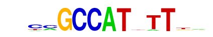

| p-value: | 1e-124 |
| log p-value: | -2.856e+02 |
| Information Content per bp: | 1.643 |
| Number of Target Sequences with motif | 684.0 |
| Percentage of Target Sequences with motif | 4.49% |
| Number of Background Sequences with motif | 525.6 |
| Percentage of Background Sequences with motif | 1.57% |
| Average Position of motif in Targets | 47.1 +/- 24.0bp |
| Average Position of motif in Background | 50.8 +/- 27.6bp |
| Strand Bias (log2 ratio + to - strand density) | 0.7 |
| Multiplicity (# of sites on avg that occur together) | 1.01 |
| Motif File: | file (matrix) reverse opposite |
| Rank | Match Score | Redundant Motif | P-value | log P-value | % of Targets | % of Background | Motif file |
| 1 | 0.899 |  | 1e-111 | -256.173812 | 2.67% | 0.69% | motif file (matrix) |
| 2 | 0.946 | 1e-105 | -243.843726 | 5.33% | 2.25% | motif file (matrix) | |
| 3 | 0.813 | 1e-95 | -219.105025 | 3.59% | 1.28% | motif file (matrix) | |
| 4 | 0.866 | 1e-69 | -160.184479 | 0.37% | 0.01% | motif file (matrix) | |
| 5 | 0.900 | 1e-42 | -98.636281 | 7.11% | 4.59% | motif file (matrix) | |
| 6 | 0.853 | 1e-32 | -74.375432 | 2.08% | 0.99% | motif file (matrix) | |
| 7 | 0.726 | 1e-30 | -70.203794 | 0.15% | 0.00% | motif file (matrix) |